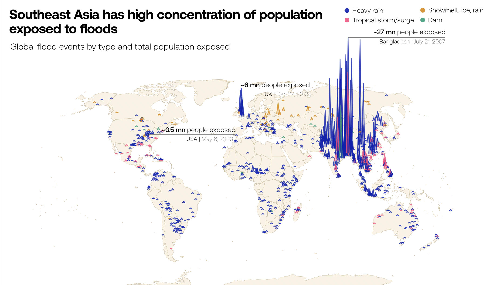
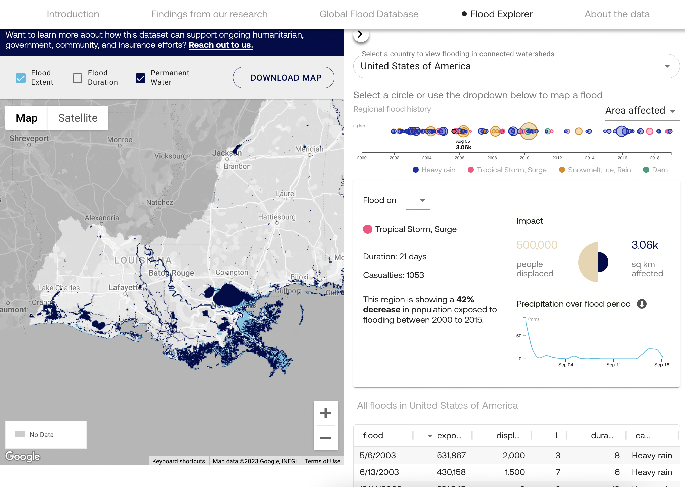
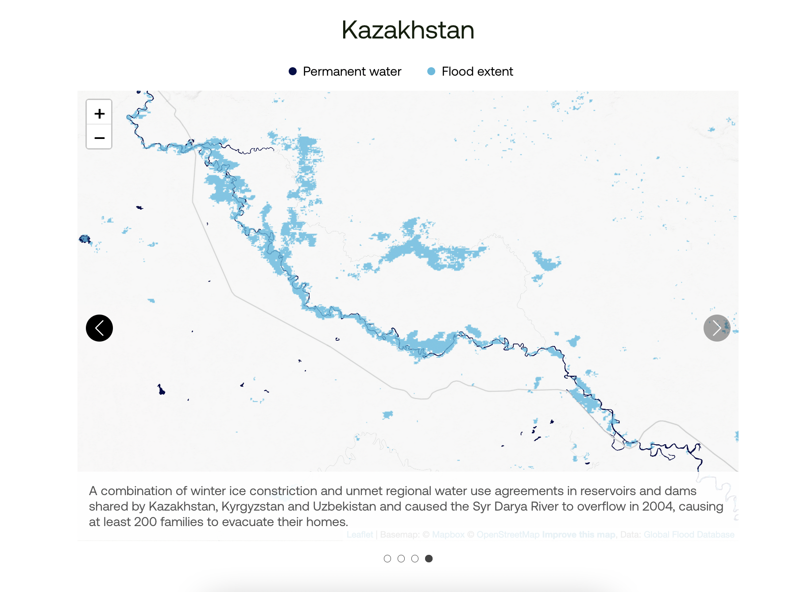

RESPONSIBILITIES
Design, information visualization, writing
ABOUT
The Global Flood Database is the largest collection of historical floodmaps in the world. Created in collaboration with Cloud to Street, this website provides a user interface to explore over 15 years worth of flood data.
To introduce the significance of this database, we created a narrative story that summarizes climate change displacement research. The database is then visualized as an interactive dashboard, allowing the user to explore historic events and their impact on vulnerable populations.
Go to site